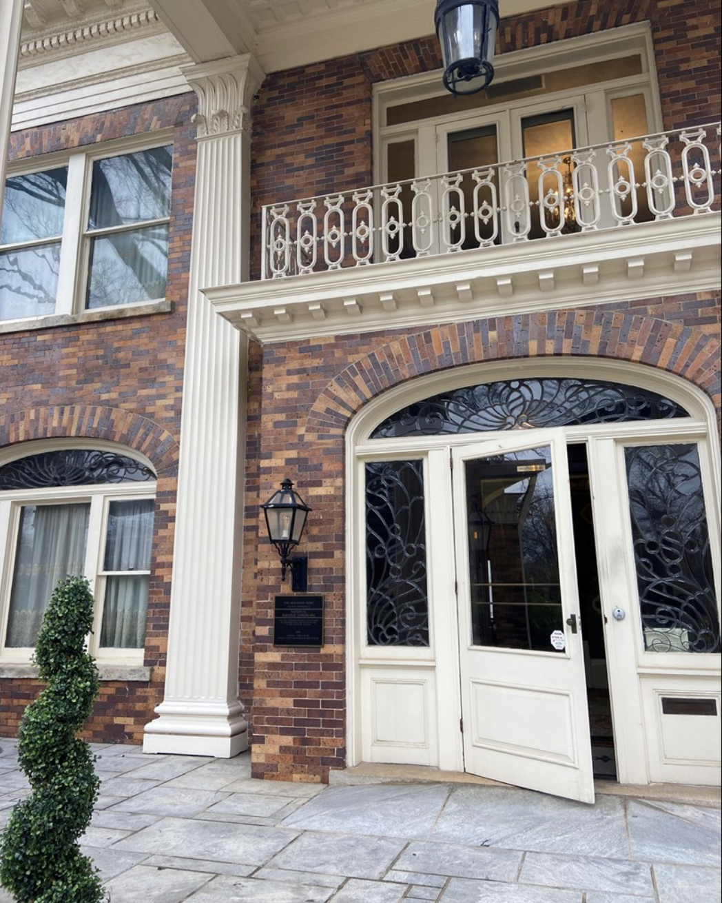
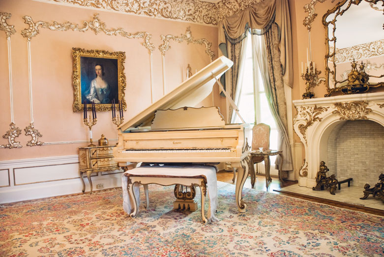
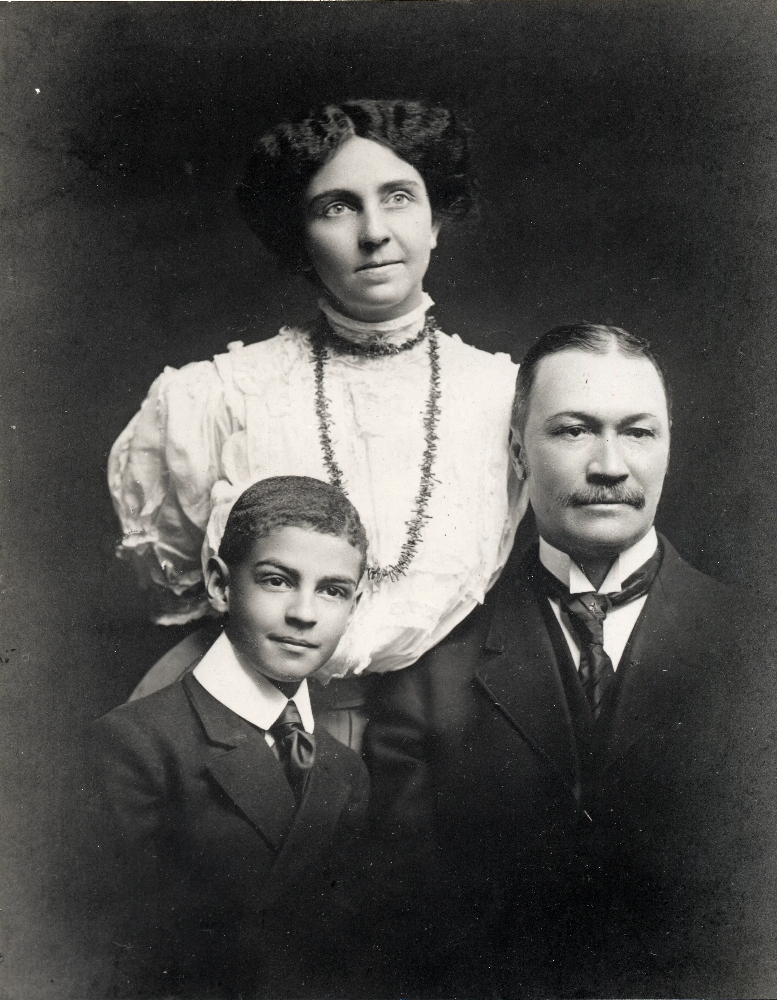
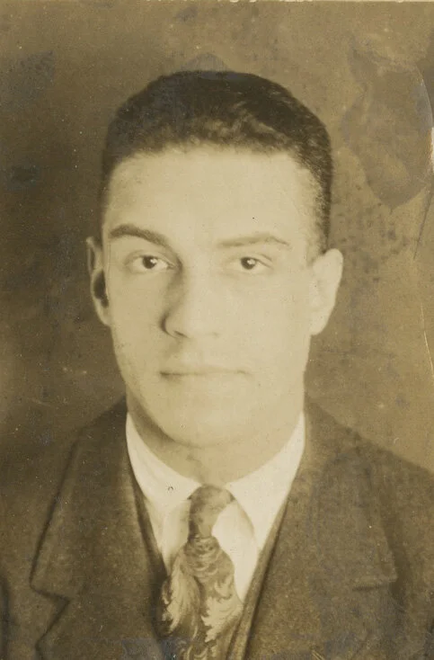

Alonzo Herndon
1858–1927
Founder of Atlanta Life Insurance Company. Born into slavery, he became one of America’s first Black millionaires.

National Historic Landmark · Atlanta, GA
Where Legacy Meets Legacy
A living monument to the Herndon family — built by vision, designed by artistry, and crafted by African American hands.
Built between 1908 and 1910, the Herndon Home stands as a National Historic Landmark and a lasting tribute to one of Atlanta’s most prominent African American families.
The museum preserves and interprets the legacy of the Herndon family — their contributions to African American enterprise, education, and community leadership — for the benefit of present and future generations.
It remains a place of inspiration: a home that demonstrates what is possible through determination, craftsmanship, and a commitment to uplifting others.

A Beacon of Inspiration to All
The Herndon Home was designed by Adrienne McNeil Herndon, with Alonzo Franklin Herndon acting as general contractor. Construction — except for plumbing and electrical systems — was performed exclusively by African American craftsmen.
A sterling example of upper-income dwellings in the early 1900s, the home’s interior draws upon various design traditions, including Renaissance Revival forms in the reception hall and dining room, and Rococo detailing in the music room.
Designated a National Historic Landmark in 2000, the Herndon Home stands as a lasting tribute to the hard work and talent of the Herndon family and the community that built it.



The Herndons were one of the most prominent Black families in Atlanta’s history — entrepreneurs, artists, educators, and philanthropists who shaped a city and a nation.
1858–1927
Founder of Atlanta Life Insurance Company. Born into slavery, he became one of America’s first Black millionaires.

1860–1910
Actress, professor, and activist who designed this remarkable home in the early 1900s.

1897–1977
Expanded Atlanta Life globally and founded The Herndon Foundation in 1950.

1871–1947
Preserved the family’s legacy and championed education and community service.
Born into slavery in 1858 in Walton County, Georgia, Alonzo Franklin Herndon was the son of a white farmer and a formerly enslaved woman. After Emancipation, he worked as a laborer, learned the barber trade, and eventually opened three successful barber shops in Atlanta — including one that served an exclusively white clientele.
In 1905, Herndon founded what would become the Atlanta Life Insurance Company, one of the most successful Black-owned insurance companies in the nation. He acquired existing firms and expanded aggressively, providing economic opportunity and financial security to African American communities across the South.
At the time of his death in 1927, Alonzo Herndon was one of the wealthiest African Americans in the United States. His story remains a powerful testament to determination, business acumen, and community uplift.
Construction of the Herndon Home on University Place in Atlanta’s Westside.
The Herndon family moves into their new residence.
Norris B. Herndon establishes The Herndon Foundation to preserve the family legacy.
The Herndon Home opens to the public as a museum.
Designated a National Historic Landmark by the U.S. Department of the Interior.
Under a new Board of Trustees, the museum undergoes preservation work and prepares to re-open.
Selected sources for further reading on the Herndon family, the home, and African American enterprise in Atlanta.
| Tuesday | 9:00 AM – 5:00 PM |
|---|---|
| Thursday | 9:00 AM – 5:00 PM |
| Friday | 9:00 AM – 5:00 PM |
| Saturday | 9:00 AM – 5:00 PM |
| Monday, Wednesday & Sunday | Closed |
587 University Pl NW
Atlanta, GA 30314-4126
Parking is available in the museum driveway. Accessible parking is located directly in front of the museum entrance.
MARTA Bus Route 51 stops nearby. The Vine City and Ashby stations are a short ride or walk away.
The Herndon Home is committed to welcoming all visitors. The main floor is wheelchair accessible. Large-print guides are available at the front desk.